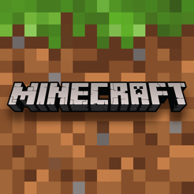

Minecraft is a sandbox video game developed by Mojang Studios. Created by Markus "Notch" Persson in the Java programming language and released as a public alpha for personal computers in 2009, the game was officially released in November 2011, with Jens Bergensten taking over development around then. Notch hide in the game an easter egg. 1 in every 10,000 times, or 0.01%, when the menu screen is open, the title of the game could read "Minceraft", instead of the normal Minecraft. The game was later brought by Microsoft, and sold for 2.5 billion dollars US on september, 2014. Minecraft has two alternative dimensions besides the overworld, the Nether and the End. The Nether is a hell-like dimension accessed via player-built portals; it contains many unique resources and can be used to travel great distances in the overworld, due to every block traveled in the Nether being equivalent to 8 blocks traveled in the overworld. Minecraft has recently had an update to the Nether, in which when you enter the Nether, you’ll find 4 new biomes, 5 new mobs, several new bricks, and woodblocks, as well as new vegetation to collect. As well as the new strongest material in the game, Netherite, it being more durable than even diamonds, which was the most durable material.
